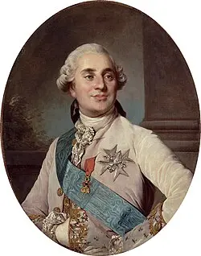

SA01 · Com sabem què va passar?
Autoria, context, intenció, evidència, contrast i diferència entre fet, opinió i interpretació.
De la notícia al problema històric
Autoria, context, intenció, evidència, contrast i diferència entre fet, opinió i interpretació.
Una notícia no queda tancada en el moment de publicar-se: les seues conseqüències poden reorganitzar la política, la seguretat i la memòria.
Al final del curs recuperarem aquests problemes per explicar quins processos dels segles XIX i XX condicionen el món actual.
Els retrats oficials no són finestres neutrals al passat: construeixen autoritat, dignitat i continuïtat. Observa com es representen dos governants separats per més de dos segles.

Monarca absolut per dret diví, envoltat de símbols dinàstics i privilegis. La crisi fiscal i política acabà convertint la seua autoritat en objecte de discussió revolucionària.
Joseph-Siffred Duplessis, retrat de Lluís XVI.
President durant quasi trenta anys dins d’un règim autoritari sostingut per l’exèrcit, l’estat d’emergència i aliances internacionals. Les mobilitzacions de 2011 forçaren la seua renúncia.
Clash no és una gravació neutral dels esdeveniments egipcis. Mohamed Diab selecciona personatges, concentra l’acció en un furgó policial i decideix què veiem i què només escoltem. Precisament per això és útil: permet estudiar com una obra construeix sentit sobre una societat polaritzada.
Font, evidència, perspectiva, context, fiabilitat, utilitat, límit, causalitat, canvi i permanència. En cada activitat hauràs de distingir allò que mostra la font d’allò que tu interpretes.